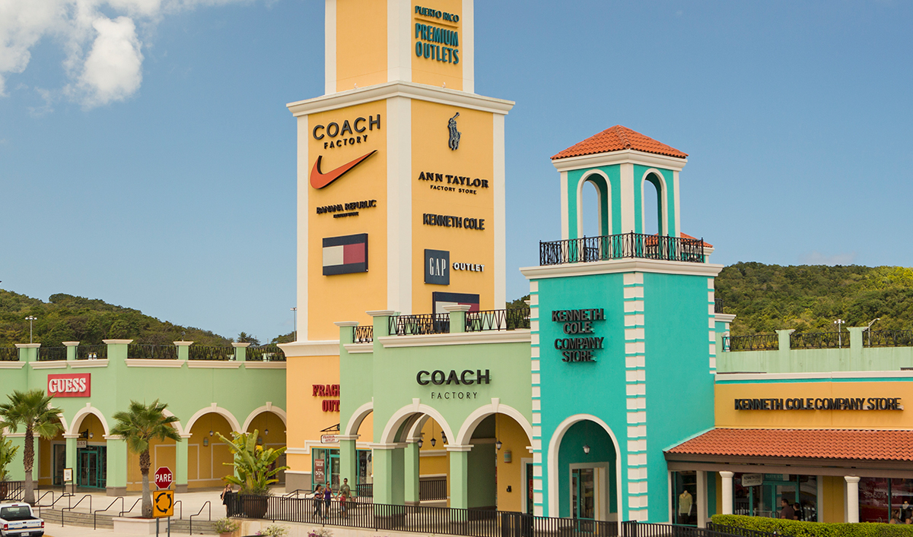
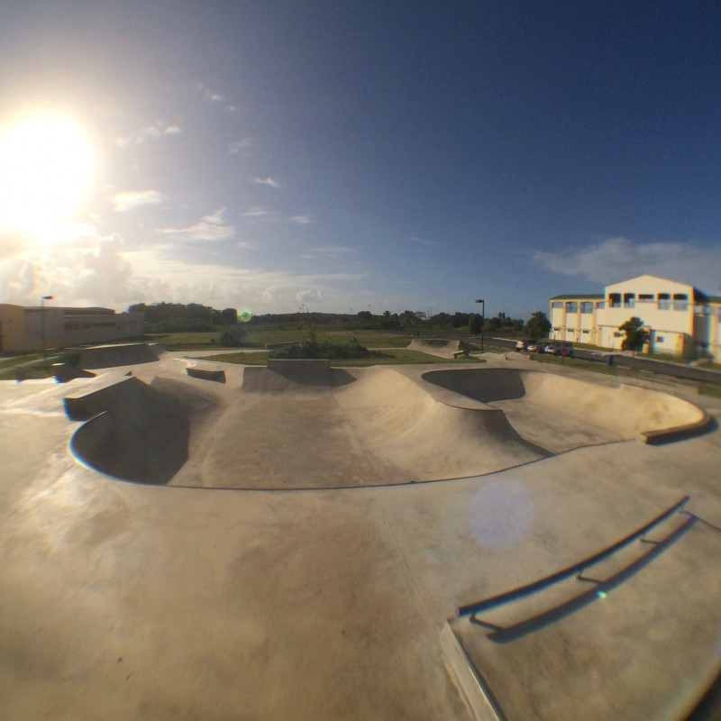
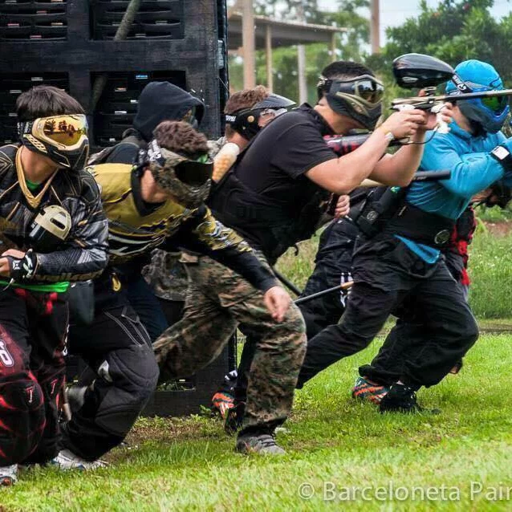

Puerto Rico Premium Outlets
Los Puerto Rico Premium Outlets son unos de los centros de compras más grandes e significativos en Puerto Rico. ¡Verás las mejores marcas como Nike, Banana Republic y Michael Kors a una fracción del precio total!
Puedes visitar los Puerto Rico Premium Outlets en:
- Dirección: 1 Premium Outlets Blvd, Barceloneta, 00617, Puerto Rico
- Website: https://www.premiumoutlets.com/outlet/puerto-rico
- Número Telefónico: (787)-846-5300
Barceloneta Skatepark
El Barceloneta Skatepark es un lugar excelente para correr bicicleta, patineta y pasarla bien con amigos.
Puedes visitar el Barceloneta Skatepark en:
- Dirección: FF56+P9F, Barceloneta, 00617, Puerto Rico
Teatro Ernesto Ramos Antonini

El Teatro Ernesto Ramos Antonini, del pueblo de Barceloneta, abrió sus puertas al público el 25 de febrero del año 2000, con el interés de proveer al pueblo de Barceloneta y sus visitantes un espacio para el sano disfrute y el desarrollo cultural. En poco tiempo se convirtió en el centro de mayor apogeo cultural del pueblo, recibiendo miles de visitantes cada año para disfrutar de la diversidad de espectáculos que él se ofrecen.
Pueden visitar el Teatro Ernesto Ramos Antonini:
- Dirección: C. Coloso, Barceloneta, 00617, Puerto Rico
Barceloneta Paintball Field
Este campo de Paintball provee un día de diversión para todos y competencia saludable para la familia
Pueden visitar el Barceloneta Paintball Field en:
- Dirección: Complejo Deportivo, Villa Georgetti, Barceloneta 00617, Puerto Rico
- Número Telefónico: (787)-329-3301
- Facebook: https://www.facebook.com/btapaintballfield/